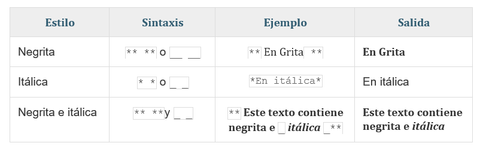

Para obtener más información sobre los sitios web de R Markdown simples, lea la documentación en https://bookdown.org/yihui/rmarkdown/rmarkdown-site.html.
Revise cada una de las secciones para que aprenda de algunos tips clásicos
Los temas puedes cambiarlo únicamente desde el archivo “_site.yml" y puedes utilizar: “default”, “cerulean”, “journal”, “flatly”, “darkly”, “readable”, “spacelab”, “united”, “cosmo”, “lumen”, “paper”, “sandstone”, “simplex”, or “yeti”.
Para crear pestañas también debes modificar el archivo “_site.yml"
Puedes escribir los siguientes comandos
# right:
# - text: "Home"
# href: index.html
# - text: "About"
# href: about.htmlEs importante que dejes la indentación (espacios brindados) como se muestra en el ejemplo.
Para obtener diferetes tipos de fuentes, utiliza el simbolo # y un espacio posterior al incio de cada título o subtitulo que requieras utilizar.
# Encabezados más grandes
## El segundo encabezado más grande
### El encabezado más pequeño
Para crear color en texto se debe generar un “spam (lapzo)” previo y cerrarlo de la misma manera
Rosas son rojas, y las violetas son azules.
#Rosas son <span style="color:red">rojas</span>, y las violetas son <span style="color:blue">azules</span>.
Cuando justifica texto, se agrega espacio entre palabras para que los bordes de cada línea se alineen con ambos márgenes. La última línea del párrafo se alinea a la izquierda.
# <p align="justify">
#Cuando justifica texto, se agrega espacio entre palabras para que los bordes de cada línea se alineen con ambos márgenes. La última línea del párrafo se alinea a la izquierda
# </p>Puede utilizar
#<p align="justify">
#<p align="center">
#<p align="left">
#<p align="right">y finalice el justificado con
# </p>otra forma de aplicar de forma sencilla es utilizar
# <center>Estilo de Texto</center>